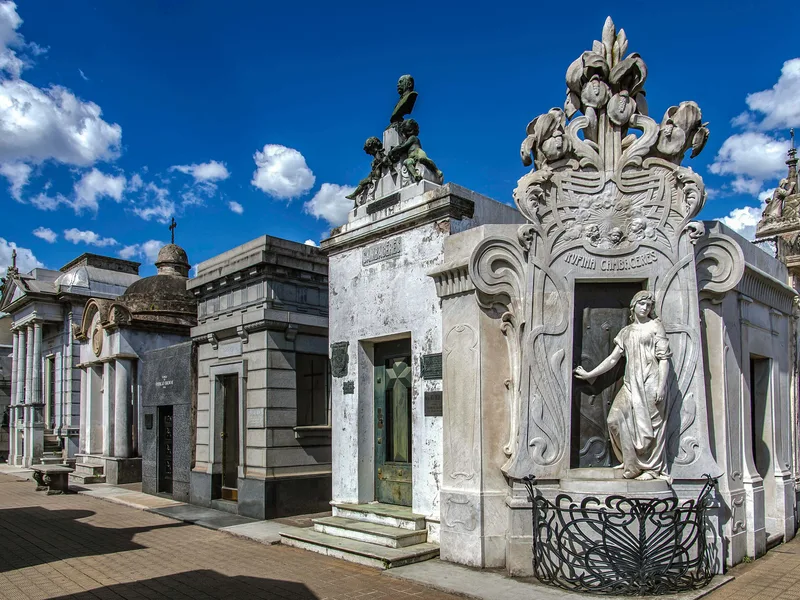

La Recoleta è una griglia di circa 4.600 tombe su cinque ettari e mezzo, disegnata come una piccola città: viali, vie laterali, lotti d'angolo. Ed è anche un labirinto. I vialetti sono identici, i cartelli pochi, e il GPS sbanda tra i muri di marmo. La maggior parte dei visitatori trova Evita, scatta una foto, gira a vuoto per venti minuti e se ne va — dopo essere passata davanti alle tombe più belle del Sudamerica senza saperlo.
Questo è il rimedio: un percorso di 22 tappe in ordine di cammino, dal portico ai vialetti più lontani, con la storia che appartiene a ogni tappa. È lo stesso itinerario dell'audioguida TouringBee della Recoleta, che aggiunge una mappa offline con la tua posizione esatta e la narrazione di uno storico, che avvii tu stesso davanti a ogni tomba. Usa la pagina per pianificare; usa l'app per camminare.
Stai ancora organizzando tutto il viaggio? Parti dalla nostra guida completa al Cimitero della Recoleta, poi torna qui per il percorso.
Il percorso in breve
Prendi l'audioguida →
Prima di tutto, orientati
Due punti di riferimento mettono ordine in tutto. Il portico è il punto di partenza e quello a cui tornerai. Il Cristo centrale — un grande Cristo bianco su un piedistallo, dove si incrociano i viali principali — è la tua bussola: ogni volta che ti perdi, raggiungi il vialetto più largo che vedi e seguilo finché non lo ritrovi. Fotografa ogni incrocio dopo una tappa importante, così potrai tornare sui tuoi passi. Il percorso qui sotto disegna un anello in senso orario, quindi non sei mai lontano da un viale.
Una parola sul ritmo. Un attraversamento da dieci minuti ne diventa quaranta appena un volto di bronzo o una cupola di vetrate ti cattura lo sguardo, ed è proprio questo il bello. Datti un limite di tempo, poi concediti di sforarlo.

Le 22 tappe, in ordine
- Il porticoComincia da fuori. Requiescant in pace sopra le colonne; un gufo, una clessidra alata, un serpente che si morde la coda sul fregio. Ogni porta all'interno ripete questo vocabolario. Superato il cancello, voltati: ora l'iscrizione parla ai vivi.
- Basílica del PilarLa chiesa che i frati costruirono nel 1732, qui accanto e a ingresso libero. Fu la parrocchia del cimitero fino al 1863, quando un massone di nome Blas Agüero morì senza pentirsi, il vescovo gli negò la sepoltura, la famiglia si rivolse al presidente — e la Recoleta diventò un cimitero civile.
- Il cenotafio dei tre amiciUna piramide di marmo con tre medaglioni di bronzo e nessuno sotto. Un giornalista, un poeta e uno storico la eressero alla loro amicizia; entro l'anno erano morti tutti e tre, nessuno aveva trent'anni.
- L'ammiraglio William BrownUn irlandese, padre della marina argentina, sotto una colonna verde che si dice fusa da cannoni. Nel 1842 mise alle strette un giovane corsaro italiano al largo della costa, lo guardò bruciare le proprie navi piuttosto che arrendersi, e lo lasciò andare. L'italiano era Garibaldi.
- Mariquita Sánchez de ThompsonA quattordici anni rifiutò il marito vecchio e ricco scelto dai genitori, chiese al Viceré il permesso di sposare il marinaio che amava, e vinse. Nel suo salotto risuonò più tardi la prima esecuzione dell'inno nazionale.
- Guillermo RawsonIl medico che spiegò a Buenos Aires che le epidemie venivano dai conventillos sovraffollati, non dalla sfortuna — e ottenne per la città fogne e acqua corrente. Cofondatore della Croce Rossa argentina.
- Liliana Crociati de SzaszakUna cappella neogotica disegnata da sua madre, una Liliana di bronzo in abito da sposa davanti, il suo cane Sabú ai piedi. Morì sotto una valanga in Austria nel febbraio 1970, a 26 anni. Tutti accarezzano il naso del cane; quasi tutti raccontano la storia un po' sbagliata.
- Rufina CambaceresLa tomba Art Nouveau di una ragazza morta il giorno del suo diciannovesimo compleanno, nel 1902 — scolpita con una mano sulla porta. La leggenda dice che si svegliò dentro la bara. È la scultura il motivo per cui la leggenda non è mai morta.
- Martín KaradagianIl lottatore di un metro e sessantacinque che si portò su per cinque piani di scale due mezzene di manzo per farsi assumere, poi inventò Titanes en el Ring — mummie, vichinghi e D'Artagnan a lottare in diretta tv per vent'anni.
- Eva PerónLa cappella della famiglia Duarte: granito nero, targhe di bronzo, rose nella grata, e una bara diversi metri sotto terra. Sedici anni nascosta, un nome falso a Milano, una sala da pranzo a Madrid, e a casa nel 1976. La storia completa →
- Francisco Javier MuñizNel 1844, finite le scorte di vaccino, questo chirurgo militare vaccinò la città con la linfa prelevata dal braccio della propria figlia neonata. Trent'anni dopo uscì a curare la febbre gialla e ne morì.
- David AllenoIl custode. Ventotto anni a spazzare questi vialetti, risparmiando per un lotto tra i presidenti, e una statua di se stesso con chiavi, scopa e annaffiatoio. Il tour ti racconta la leggenda del suicidio; il certificato di morte dice 1915 e non la conferma.
- Luis Ángel FirpoIl Toro Selvaggio della Pampa, a grandezza naturale nella sua vestaglia. Nel 1923 scaraventò Jack Dempsey fuori dal ring al Polo Grounds; l'arbitro contò lentamente, i giornalisti rispinsero dentro il campione, e l'Argentina non ha mai perdonato nessuno di loro.
- Toribio AyerzaUna dinastia di medici — la prima tracheotomia in Argentina, una malattia cardiaca che porta il nome di famiglia — e un nipote rapito dalla mafia di Rosario nel 1932, ucciso perché un telegramma in codice diceva “uccidere” invece di “inviare”.
- Salvador María del CarrilUn vicepresidente e sua moglie, Tiburcia, che non si rivolsero la parola per trent'anni dopo che lui annunciò sui giornali che non avrebbe pagato i suoi debiti. Le loro statue guardano in direzioni opposte. L'ha voluto lei.
- Carlos MenditeguyCampione di polo, campione mondiale juniores di tennis, golfista scratch in nove mesi per scommessa, pilota di Formula Uno, e l'uomo che saltò un Gran Premio per andare in Costa Azzurra con Brigitte Bardot. “Un'occasione da non perdere.”
- Victoria OcampoFondatrice di Sur, editrice di Borges e Camus, prima donna argentina al processo di Norimberga, incarcerata da Perón per 26 giorni a 63 anni. La cripta di famiglia è sobria; la vita non lo fu.
- Luis Federico LeloirPremio Nobel per la chimica nel 1970 per i nucleotidi degli zuccheri — e inventore, a quattordici anni, della salsa golf, maionese e ketchup, che si pentì di non aver brevettato. La cappella Art Nouveau con la cupola a mosaico precede il premio di sessant'anni.
- Armando BóIl regista che portò il primo nudo femminile sugli schermi argentini — la sua amante e musa Isabel Sarli — promettendole un costume color carne e una cinepresa molto lontana. L'obiettivo aveva lo zoom.
- Ramón SantamarinaOrfano a otto anni, clandestino su una nave a sedici, carrettiere a Tandil, e alla fine proprietario di ventisei estancias, una banca e sedici figli. Una storia dalle stalle alle stelle, con un finale cupo.
- Raúl AlfonsínIl presidente che chiuse la dittatura nel 1983 ed ereditò un'inflazione al 200%. La sua tomba, con un busto di Luciano Garbati, fu inaugurata il 30 ottobre 2009 — l'anniversario della sua elezione.
- Benjamín Solari ParraviciniIl pittore i cui schizzi, diceva, erano guidati da una voce: la televisione, la bomba atomica, un uomo sulla luna, disegnati con decenni di anticipo. Il Nostradamus argentino, e la fine del percorso.

Ascolta le storie davanti alle tombe
22 tappe, mappa offline, narrazione in inglese o spagnolo — da €9.99, un solo pagamento, nessun abbonamento.
Scarica l'audioguidaLa versione da 45 minuti
Hai poco tempo, o fa troppo caldo per attardarsi? Fai le tappe 1, 4, 7, 8, 10, 12 e 13 — il portico, l'ammiraglio Brown, Liliana, Rufina, Evita, il custode e il pugile — poi torna al Cristo e verso l'uscita. Avrai visto i quattro stili, le due grandi leggende, la tomba più visitata d'Argentina e la più umana.
Consigli per il percorso
- Scarica prima. Prendi l'app e il tour con il Wi-Fi dell'hotel. Dentro, il marmo blocca a tratti sia i dati sia il GPS; una mappa offline mostra comunque il percorso anche quando il puntino blu esita.
- Guarda in alto e attraverso. I dettagli migliori sono sopra l'altezza degli occhi o dietro porte a vetri — vetrate, soffitti a mosaico, scale a chiocciola che scendono tre piani. Usa lo zoom del telefono invece di appoggiarti alla porta.
- Leggi le porte. Clessidra, torcia rovesciata, corona, farfalla, ancora: ognuna è una frase sulla famiglia che riposa dentro. Non vedere simboli “massonici” ovunque — quasi tutti sono allegorie cattoliche.
- Lascia il passo a chi è in lutto. È un cimitero in attività. Se in un vialetto c'è una famiglia o un funerale, fai prima un'altra tappa e torna dopo.
- I gatti. Un tempo erano decine; i volontari hanno trovato casa a quasi tutti. Se ne vedi uno, goditelo a distanza e non dargli da mangiare.
- Dopo. Il caffè La Biela e il gigantesco gomero sono a due minuti dal cancello; la basilica è qui accanto ed è gratuita.
Perché farlo con l'audioguida
Tutto quello che hai letto è qui, gratis. Quello che la pagina non può fare è stare nel vialetto insieme a te. Il tour TouringBee ha le 22 tappe su una mappa offline, così sai sempre dov'è la prossima; ogni tappa è una registrazione di tre-cinque minuti, scritta da uno storico professionista, che avvii tu stesso quando arrivi — niente fretta, niente ombrellino di gruppo da inseguire. È narrato in inglese e spagnolo, funziona su iPhone e Android e resta tuo per un anno. Costa meno del biglietto d'ingresso.
Audioguida del Cimitero della RecoletaAccesso immediato
- 100% offline — dentro il cimitero non servono né Wi-Fi né dati
- Mappa offline con il percorso — ogni storia la avvii tu, davanti alla tomba
- Narrazione in inglese e spagnolo
- Funziona su iOS & Android
- 22 tappe, circa 1–2 ore al tuo ritmo
In sintesi
Entra alle 9:00, usa il Cristo come bussola e segui le tappe in ordine, così quelle affollate arrivano prima della folla. Regala alla Recoleta novanta minuti e lei ti restituisce una storia nazionale scolpita nel marmo.
E se vuoi le storie raccontate davanti alle tombe, nelle tue cuffie, al tuo ritmo — l'audioguida serve esattamente a questo. Prendi l'audioguida — €9.99
Domande frequenti
Quanto dura il percorso fai-da-te?
Circa 90 minuti a passo tranquillo per tutte le 22 tappe, con il tempo di guardare. L'essenziale — portico, Brown, Liliana, Rufina, Evita, Alleno, Firpo — sta in 45 minuti.
Serve una guida per visitare il Cimitero della Recoleta?
No. Il cimitero è completamente aperto ai visitatori indipendenti. Ti servono solo un modo per non perderti e qualcuno che ti racconti le storie: una mappa e un'audioguida fanno entrambe le cose, al tuo ritmo.
Ci si può perdere nel Cimitero della Recoleta?
Facilmente. È una griglia di circa 4.600 tombe su cinque ettari e mezzo, i vialetti sono quasi identici e il GPS sbanda tra gli alti muri di pietra. Usa il Cristo centrale come bussola e scarica una mappa offline prima di entrare.
Il percorso è adatto a sedie a rotelle o passeggini?
I vialetti sono lastricati ma irregolari, con qualche gradino e passaggi molto stretti. I viali principali si percorrono senza problemi; alcuni vialetti laterali di questo percorso no. Chiedi assistenza all'ingresso di Junín 1750.
Qual è l'ordine migliore: prima Evita?
No. Il vialetto di Evita è preso d'assalto da metà mattina; visitala come tappa 10, lungo il percorso, oppure vai lì per prima solo se sei al cancello alle 9:00. Il percorso qui sopra è costruito perché le tappe affollate arrivino dove la folla non c'è ancora.
L'audioguida segue questo percorso?
Sì: le 22 tappe di questa pagina sono le 22 tappe dell'audioguida TouringBee della Recoleta, nello stesso ordine, con una mappa offline che mostra dove sei.
Continua a esplorare
Alcuni link in questa pagina sono link di affiliazione (GetYourGuide, Booking.com, TouringBee). Se prenoti tramite questi link potremmo ricevere una piccola commissione — senza alcun costo aggiuntivo per te. Non influisce mai su ciò che consigliamo. Leggi la nostra Informativa sulle affiliazioni.